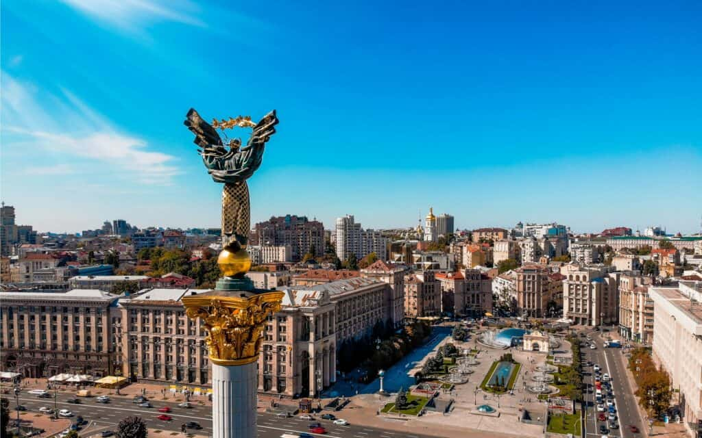

Про місто

Київ — столиця України, одне з найдавніших міст Європи. Він розташований на берегах Дніпра і поєднує в собі багату історію, сучасну архітектуру та живу культуру.
Чому я обрав Київ
Київ — це моє рідне місто. Тут я відчуваю особливу енергію, бачу силу та красу українського духу. Кожна вулиця, кожен парк і собор мають свою історію.
Цікаві факти
- Київ заснований у V–VI столітті.
- Місто має понад 1000 років історії.
- Софія Київська та Києво-Печерська лавра — об’єкти ЮНЕСКО.
- Київ називають «матір’ю міст руських».
Визначні місця
- Софійський собор
- Києво-Печерська лавра
- Андріївський узвіз
- Майдан Незалежності
- Хрещатик
Особиста оцінка
Оцінка: 10/10
Київ — місто, яке завжди надихає. Воно має душу, історію і майбутнє.
Додаткова інформація
Більше про Київ можна дізнатися на Вікіпедії.